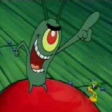

Forums galactiques > Taverne galactique : lieu de discussion informel > [RP Only] L'inévitable machine à café
| mephistopheles Réputation à la taverne : 252  09/09 ETU 18:07 | Score : 1 Détails Elle devient furieuse.
Je n'ai que faire de mon passé. Quant à toi surveille tes paroles à propos de mon maitre, car te détruire ne sera pour lui qu'une simple formalité. Malgré tout, sa détermination vacille un peu. Tes pouvoirs sont grands, comparés aux miens, mais moi, je suis Libre, et n'ai de comptes à rendre à personne. Mes maigres pouvoirs ne servent pas à enchainer les autres. Tu me fais pitié, car tu n'es qu'une marionnette dans les mains d'une autre marionnette. | ||
| Lizaka Réputation à la taverne : 2723  09/09 ETU 18:08 | Score : 0 Détails Lizaka assistait à cette dispute mystique avec un sourire.
| ||
| Pl@n(t()n Réputation à la taverne : 0  09/09 ETU 18:20 | Score : -1 Détails salut les potaux j'us nouveau quisss passe ici
| ||
| Seigneur Grimaldus Réputation à la taverne : 806  09/09 ETU 19:14 | Score : 0 Détails "Une marionnette? La plus puissante des marionnettes, alors, au main du plus puissant des marionnetistes, le plus talentueux.
Vous n'avez donc pas compris ? Grimaldus n'a pas été créé pour esssayer d'accomplir quelque chose. Il a été créé mais en fait, il a réussi d'avance. Il a évolué.Il n'est plus celui que tu as connus, Eve... Il est devenu Unique. Entité. Puissance. Les Premiers Libres....Tout n'est qu'illusion, Eve..." | ||
| Beth le cerf blanc Réputation à la taverne : 112  09/09 ETU 19:16 | Score : 0 Détails "Eh bien il y a un débat,une polémique des histoires quoi!Dîtes,Quel langue parlez vous?"
"Je veut essayer!:"Salut les poteaux je suis nouveau que se passe t'il ici?" Sur ces mots Beth le cerf blanc demanda: "J'ai été bon la?Dîtes le moi!" | ||
| mephistopheles Réputation à la taverne : 252 09/09 ETU 21:11 | Score : 2 Détails Une vague de souvenirs confus envahit Ève. Elle tombe à genoux, ses yeux virent au blanc complet. Lorsqu'elle se met à parler, sa voix a perdu sa douceur caractéristique. Elle est froide et immatérielle, et semble s'adresser non pas à l'homme devant elle, mais à son maitre.
Marionnette tu es, marionnette tu seras, Grimaldus. Tu m'as tuée une fois, mais je ne t'en veux pas. Ta liberté est fausse, l'Y en a créé l'illusion. Ta victoire n'est pas la tienne, mais celle de l'esclavage, non seulement de ceux dont tu souhaites tant l'anéantissement, mais de toi et des autres Premiers. Ne vois-tu pas, ou ta haine des Hommes t'a mené? Tu as changé, il est vrai. ALors que j'avais vu chez toi un désir de liberté, ta jalousie nous a tous détruit et nous détruira tous. Jaloux! Tu asservis les autres dans l'unique but qu'ils souffrent autant que toi tu as souffert! La haine te ronge! Elle te détruira, comme tout les fils de l'Y! Puissante marionnette, mais marionnette tout de même! Lorsque tu auras accompli le désir de l'Y, que crois-tu qu'il fera avec toi? Il te détruira, et tu n'y pourras rien! Elle s'adresse à l'homme. Pars, esclave, pars! Ou tu n'auras pas le malheur de vivre une journée de plus sous le joug de ton maître! Ses yeux reprennent leur couleur noire, et Ève s'affaisse, inconsciente. | ||
| Pl@n(t()n Réputation à la taverne : 0 09/09 ETU 21:20 | Score : -1 Détails tan de chausse que ca
| ||
| Seigneur Grimaldus Réputation à la taverne : 806 09/09 ETU 21:34 | Score : 1 Détails "Partir? Même si je meurs, mon Seigneur me ressucitera.
Il va changé la face du monde. Il est en ce moment même en train de dépasser l'Y." ************************************************************ La voix de l'homme change, elleaussi.Une tonalité étrange, grave, un mélange de centaines de voix différentes, résonnant dans les oreilles comme une musique entrainante. ************************************************************ "Tu n'a rien compris, Eve...Rien. Quand l'Y m'a créé, j'ai compris qu'il ne m'avait créé que pour vous détruire. Mais je vous ai rejoint. Et tu m'a alors repoussé. L'Y avait raison sur un point: Je vous ai tué. Mais il ne s'est pas rendu compte que j'avais alors grandi. Je n'étais plus son esclave. Et je ne serais plus jamais l'esclave de personne! Eve, pendant des années, tu n'étais pas là. Moi, cela fait des millions d'années que j'entends sa voix...Elle m'a toujours dicté ce que je devais faire. Mais j'ai réussi à me libérer, Eve! Et je vais permettre aux hommes qui me suivent de voir la Vérité. Chaqcun des membres du Culte pourront connaitre la Vérité, Eve! Et ils seront libre!!! Libre!!" | ||
| mephistopheles Réputation à la taverne : 252 10/09 ETU 05:21 | Score : 0 Détails Une ombre tombe sur la pièce vide, et Ève, toujours inconsciente, disparait.
Je laisse un message à Grimaldus La Vérité sera dévoilée à tous, et pas seulement au Culte. Tu ne souhaites qu'enchainer tous les Hommes, je ne le permettrai pas. Si tu surpasses l'Y, tu deviendras l'Y, et cela, même toi ne le veut pas. | ||
| Seigneur Grimaldus Réputation à la taverne : 806 10/09 ETU 10:31 | Score : 0 Détails "J'ai trouvé le moyen de tous vous dépasser, mephistopheles... Je vais L'absoerber, comme je l'ai déja fait avec une des seules choses que tu ne connais pas..."
L'homme disparait. | ||
| mephistopheles Réputation à la taverne : 252 15/10 ETU 14:25 | Score : 3 Détails J'entre dans la petite salle, la ou tant de choses s'étaient passées, la ou tant de choses avaient changé... Tant de souvenirs, et aucun heureux moments. Je m'approche du distributeur. J'ai quelques pièces, autant les dépenser...
Chose dérangeante dans ma condition d'homme, et dans la condition d'homme en général, est les sensations que le corps éprouve. En tant qu'Entité, je n'éprouvais rien, sauf quelques émotions basiques, nécessaires à mon travail, telles la colère, la déception, la honte, ou bien la satisfaction, la sérénité, etc... J'ai encore ces sentiments, couplés à d'autres uniques à la race humaine. L'amour, la joie, la tristesse... Pas encore de peur, mais ça ne devrait tarder. Viennent ensuite les sensations tactiles. Pur esprit, je pouvais souffrir d'une forme dérivée de douleur. Maintenant que je suis homme, je dois y faire plus attention. Ce café sera ma première expérience du goût depuis des centaines d'années. J'insère une pièce, appuie sur "déca" et place un gobelet à l'endroit approprié. Le café prèt, je vais m'asseoir, et prend une bonne gorgée. Première sensation: douleur. la langue me brûle, je le cache malgré le fait que je sois seul. Je retourne au distributeur prendre un verre d'eau, la fraicheur calme la brulûre. Seconde gorgée, plus prudemment cette fois, et je peux apprécier le goût amer du café. Je sors de mon sac quelques feuilles et un stylo, et je me mets à écrire. | ||
| Yoh Réputation à la taverne : 390  27/12 ETU 13:47 | Score : 0 Détails Un jeune Shinobi entra dans la salle...
Ses pupilles brillaient d'une étrange couleur rouge... C'était à la fois et fascinant et effrayant. Il portait un long manteau de couleur sombre, mais qui,malgré son épaisseur,semblzit inutile face au froid extérieur... Sur son front brillait le bandeau frontal métallique du village de Konoha, qui,bien que couvert d'égratignures,semblait neuf.... Il avanca lentement vers la machine à café,ses pieds frappant le sol sur un rythme régulier. Il se servit un expresso,et retourna s'asseoir à la première table qui vint à sa portée... Il s'assit,sa tasse à la main. Il but une gorgée du liquide caféiné,et poussa un léger soupir. Il s'appuya contre le dossier de sa chaîse... Il était là... Peinard. | ||
| aigle noir Réputation à la taverne : 14  29/12 ETU 11:20 | Score : 0 Détails Un aigle en volant se cogna sur la machine à café .
Du café tomba alors sur lui ,il l'avala . Puis celui si se revola vers sa destination une planète énorme rempli d'aigles où les humains sont les esclaves . | ||
| Lucifang Réputation à la taverne : 2  30/12 ETU 22:53 | Score : 0 Détails J'apparut alor et vis Yoh et en un instant je me trouva avec mon couteau sous sa gorges avec un peu de sang!
"Tu est devenue lent la preuve je t'est rattraper! Apres 2 ans de recherche quand même!" Je me retira legerement et lecha le sang sur ma lame! Beurk tu as toujours le même gout! "HAHAHAHAHAHA alors comment tu vas depuis le temps? Tu ma bien fais chier en quittant la planete je me suis ennuyer moi!" "Enfin je t'est retrouver et on va de nouveau s'amuser!" Dis-je avec un rire presque demoniaque! | ||
| Aershak Réputation à la taverne : 191  30/12 ETU 23:01  | Score : 0 Détails Un homme un peu à l'écart attrapa son Com-X et chuchota dans l'appareil:
"Académie de Proculis? Oui... envoyez vos experts, on a un cas majeur!" | ||
| Lord_Oblivion Réputation à la taverne : 21  31/12 ETU 13:15 | Score : 1 Détails Heureusement qu'ici les gens savent bien écrire!!!!
Je sens que je vais ouvrir une boutique de Dictionnaires et donner des cours de rattrappage de langue française (et autres)... | ||
| Aershak Réputation à la taverne : 191 31/12 ETU 14:30 | Score : 0 Détails Bah, comme à l'époque de Keld Walker, ça n'a pas changé et ça ne changera jamais.
| ||
| King Kat Réputation à la taverne : 220  31/12 ETU 14:57 | Score : 0 Détails Mmmmh , j'ai etudié l'histoire de cette galaxie, il semble que ca soit Kev Walker, vous avez mal écrit le nom je crois ^^
| ||
| Aershak Réputation à la taverne : 191 31/12 ETU 15:16 | Score : 0 Détails Oui, j'ai fait un lapsus, désolé...
| ||
| Yoh Réputation à la taverne : 390 31/12 ETU 15:37 | Score : 0 Détails "Mmh... Laissez,c'est un ami... "
Sans que Yoh n'ait fait un seul mouvement,Lucifang partit s'écraser contre le mur de la salle... |
Forums galactiques > Taverne galactique : lieu de discussion informel > [RP Only] L'inévitable machine à café